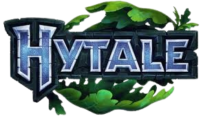

HYTALE
The origins of Hytale represent one of the most fascinating success stories in modern game development. Its roots do not lie in a traditional game studio, but rather within the community of another massive game: Minecraft. In 2013, Simon Collins-Laflamme and Philippe Touchette founded the Hypixel server, a collection of custom multiplayer minigames built inside Minecraft. Hypixel quickly exploded to become the largest and most successful server in the game's history, hosting millions of unique players and breaking Guinness World Records. However, as their ambitions grew, the Hypixel team found themselves constantly battling the technical limitations of Minecraft's Java architecture and strict EULA guidelines regarding server monetization and modding.
Realizing they needed total control to realize their vision, the core team formed Hypixel Studios and secretly began development on their own standalone game in 2015. After three years of quiet, self-funded development, they officially announced Hytale in December 2018 with an explosive cinematic trailer. The internet's reaction was unprecedented. The trailer promised a beautiful blend of deep sandbox building, rich RPG adventure, and built-in, studio-grade creator tools. It racked up over 30 million views within its first month, vastly exceeding the team's expectations and instantly cementing Hytale as the most anticipated "Minecraft-killer" ever conceived.
The massive success of the announcement trailer caught the attention of major industry players. In April 2020, it was announced that Riot Games (the powerhouse developer behind League of Legends and Valorant) had fully acquired Hypixel Studios. This acquisition was a massive turning point. It provided Hypixel Studios with AAA funding, a vastly expanded development team, and the operational support needed to build a global infrastructure. It allowed the developers to stop worrying about funding and focus entirely on creating a generational game without compromises.
However, this influx of resources also led to a massive pivot that significantly extended the game's development time. As the scope of Hytale grew, the team realized that their original custom-built Java/C# engine would not be able to handle their long-term goals for the game, particularly regarding cross-platform play. In 2021, Hypixel Studios made the incredibly difficult decision to completely rewrite the game's engine from scratch in C++. This monumental undertaking ensured that Hytale would run flawlessly across PCs, consoles, and mobile devices simultaneously, while making it easier to patch and maintain.
Today, Hytale stands as one of the most highly anticipated sandbox games in the world. Its lengthy development cycle has been characterized by transparent blog posts detailing their engine overhauls, combat redesigns, and AI improvements. By refusing to rush the product to market, Hypixel Studios and Riot Games have positioned Hytale not just as a game, but as a sprawling, future-proof platform designed to empower a new generation of players, modders, and content creators.
Hytale’s flagship experience is its "Adventure Mode." Unlike traditional voxel games that drop you into an entirely blank slate with no direction, Hytale attempts to seamlessly marry limitless sandbox building with a structured, narrative-driven Action-RPG. You play as an Avatar exploring the magical, procedurally generated world of Orbis, fighting against the void-corrupted forces of the game's main antagonist, Varyn. Here is a comprehensive breakdown of the core mechanics you will need to master.
When you spawn into Adventure Mode, you arrive on the world of Orbis. The procedural generation is far more advanced than simple biome randomization; the world is divided into distinct, geographical "Zones," each with its own unique climate, factions, blocks, and lore.
Below the surface, Orbis features incredibly deep, multi-layered underground realms. Rather than just random caves, you will find massive subterranean jungles, underground oceans, and prefabricated dungeon structures seamlessly woven into the procedural terrain.
Combat in Hytale is a massive departure from standard block-games. It features a fully dynamic, reactive combat system inspired by traditional RPGs. Mashing the attack button will not guarantee a win; you must manage spacing, timing, and weapon types.
Weapons are not just stat sticks; they fundamentally alter your playstyle and animations:
Furthermore, combat features active dodging, charged attacks, and weapon-specific special abilities. Enemy AI is also highly advanced; Trorks will flank you, coordinate attacks, and react dynamically to the spells you cast.
While you can ignore the story and just build a farm, Adventure Mode rewards exploration through its Point of Interest (POI) system. As you explore, you will find camps, ruined towers, and massive dungeon entrances. These areas feature "Prefabricated" designs—meaning they were hand-crafted by developers to ensure high-quality platforming and combat encounters, but they are randomly scattered across your world.
Dungeons culminate in Boss Fights. These are not simple enemies with larger health pools; Hytale bosses have distinct phases, arena mechanics, and attack patterns you must memorize. Defeating a boss yields high-tier loot, epic weapons, and unique magical artifacts that you cannot acquire just by mining.
For players who love to build, Hytale expands the traditional block-placing mechanics with an unprecedented level of granularity and decoration.
Building: Alongside standard 1x1 blocks, Hytale features vertical slabs, half-stairs, and micro-blocks. The game also includes hundreds of prefabricated decorative items out of the box—chairs, tables, weapon racks, glowing crystals, and animated foliage. You don't need to use a staircase to pretend it's a chair; you can just craft a highly detailed chair.
Crafting: Crafting is highly visual and takes place at dedicated workstations. You will smelt ores at a forge, refine lumber at a workbench, and experiment with alchemical ingredients at an apothecary table to create potions. Crafting high-tier gear often requires a combination of mined resources (like Thorium or Cobalt) and rare drops from dungeon bosses.
Agriculture: Farming is robust. You must till soil, manage hydration, and plant seeds that grow over time. You can also tame, breed, and raise a wide variety of wildlife. Animals have complex behaviors; foxes will try to steal your crops, and you can build specific feeding troughs and pens to keep your livestock happy and productive.
Your Avatar is fully customizable. You can change your race (Human, Elf, etc.), hair, facial features, and clothing at any time. As you play Adventure mode, you aren't just grinding for materials; you are grinding for gear. Progression is largely tied to your equipment. Exploring dangerous biomes requires specific elemental resistances, and unlocking a new tier of armor or a legendary weapon completely changes the regions you are capable of surviving in.
Because Hytale is being built by the creators of the world's largest minigame server, "Adventure Mode" is only half of the package. Hytale is designed from the ground up to be a revolutionary platform for creators, modders, and competitive players.